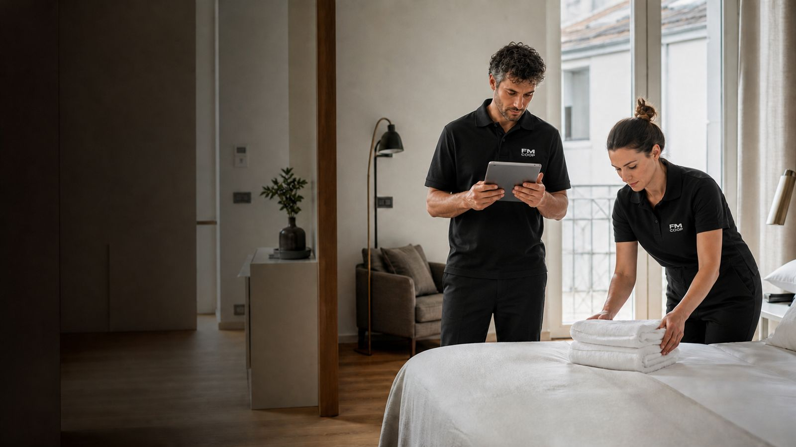

Un solo referente, squadre organizzate e un metodo che regge anche i giorni storti. Ecco cosa succede davvero, dal primo contatto in poi.
Chi gestisce spazi conosce il problema: l'impresa di pulizie, l'idraulico, la lavanderia, il tuttofare. Quattro fornitori, quattro numeri, e quando qualcosa va storto ognuno dice che non è colpa sua.
Con noi c'è un referente unico che risponde di tutto: pulizie, biancheria, manutenzioni, esterni. Un numero, una fattura, nessun rimpallo. Se c'è un problema, sai già chi chiamare — e chi te lo risolve.

Ogni sera prepariamo il programma del giorno dopo sulla base dei tuoi check-out, degli orari di apertura o dei momenti in cui lo spazio è libero.
Le squadre partono già sapendo dove andare, cosa portare e cosa serve in ogni immobile: quante persone arrivano, quanta biancheria preparare, se c'è un intervento in sospeso. Niente telefonate all'ultimo per capire chi fa cosa.
"Il programma del giorno dopo è pronto la sera prima."
— Così al mattino nessuno perde tempo a organizzarsi
Ogni passaggio si chiude con un controllo dell'ambiente. Non guardiamo solo se è pulito: guardiamo se funziona.
Una maniglia che sta cedendo, un aspiratore fermo, una perdita sotto il lavandino, un elettrodomestico che non parte: se lo troviamo te lo diciamo con la foto, prima che se ne accorga l'ospite o il cliente. Molte volte lo sistemiamo già in quel passaggio.
Un ospite che libera l'appartamento con un giorno di anticipo. Un check-in spostato alle 13 quando era previsto alle 18. Una richiesta che arriva alle nove del mattino per la stessa giornata.
Succede, e succede spesso. Noi riorganizziamo il giro e, quando la squadra lo permette, lo copriamo: lavoriamo 7 giorni su 7 e le richieste last minute le valutiamo subito. Se non ce la facciamo te lo diciamo, così hai il tempo di organizzarti. È in queste occasioni che si vede la differenza tra un fornitore e un partner.
Succede anche a noi di sbagliare. Quello che conta è cosa succede dopo.
Scrivi o chiami il tuo referente, su WhatsApp o al telefono, con una foto se ce l'hai.
Guardiamo le foto e la check-list di quel passaggio e sentiamo chi era sul posto.
Se dipende da noi torniamo a sistemare il prima possibile, prima dell'arrivo successivo quando si può.
Aggiorniamo la scheda dell'immobile o il giro, così la stessa cosa non si ripete.
FM SCRL è una società cooperativa: le persone che entrano nei tuoi spazi fanno parte di una struttura organizzata, con ruoli, turni e continuità. Non sono singoli che cambiano ogni settimana. Chi lavora sui tuoi immobili impara a conoscerli — e questo si vede nel risultato.
Nessun impegno e nessun costo per capire se possiamo esserti utili.
Quanti spazi, dove, con che frequenza e quali sono i problemi che oggi ti portano via più tempo. Bastano due righe su WhatsApp o una telefonata.
Niente listino uguale per tutti: ogni realtà ha volumi, distanze ed esigenze diverse. Il preventivo è gratuito e scritto sui tuoi numeri.
Si comincia anche da pochi spazi per vedere come funziona. Il servizio si aggiusta strada facendo, sulle esigenze che emergono davvero.
Raccontaci la tua situazione: ti rispondiamo con un preventivo gratuito e su misura.
Richiedi un preventivo Scrivici su WhatsApp